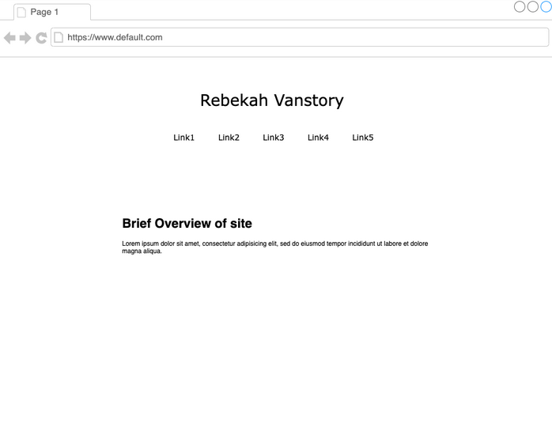

Peer Review 2: Vanstory, Joe
(No website was provided, so outline img is used.)
Review Check list
- Page has mostly sufficient contrast/font sizing.
- Page has Header, Main, and Navbar, but not sign of footer.
- Site has brand header (Name of person).
- Everything would be clearly labeled on the site. Links are right below header, making it easy to traverse.
- While this is an outline, colors on site or pure white and black.
- Links dont seem like they would be blue or purple.
- Site Map is properly and thoroughly planned out, with 9 total pages planned, offering things like an about me, a contact area, and photos.
- While there is an outline, there is no actual website to visit.